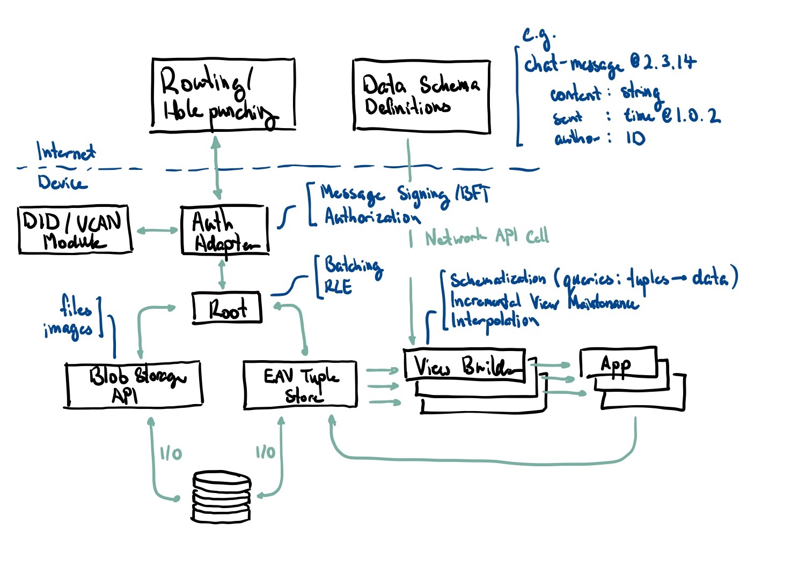

Companies of the future should derive value from the intelligence they provide on top of existing data rather than have the value be just the data.
How can we imagine more rhizomatic structures instead of arborescent systems?
DISCLAIMER: To borrow words from Robin Sloan: While it is okay to share this link, I want to underscore that I am sending it specifically to you with the hope that you will really think about it! At such a primordial stage, a proposal like this doesn’t need diffuse, drive-by attention. It needs, instead, close consideration and generous imagination.
The competitive advantage of the vast majority of today’s centralized platforms are in their data moats and network effects. The major reason why these platforms remain so dominant is because of their data and users, not because of how good the service quality is.
As a result, apps have become inseparable from data. In an ideal world, there is data-neutrality. Much like how net neutrality strives to maintain separation of provider and content markets, data neutrality strives to maintain the separation of data and application markets.
In an ideal world, we focus on local-first software that works independently of large platforms – at the end of the day platforms should be used to support efficiency of collaboration at scale, not to gate users from moving their data for the sake of retention.
I’ve spent a lot of time looking at the retrospectives of peer-to-peer protocols and distributed applications and there are 3 common themes I’ve found in all of them:
- Running your own infrastructure is hard. We need to think about the average non-technical user.
- Data availability and durability is largely unsolved. In most p2p systems, offline collaboration isn’t possible.
- Lack of thought behind off-ramping off of existing systems. We have shiny new systems, how do we get people to switch to it?
While blockchain can be used in creative ways to overcome most of these, it currently comes with a large set of downsides that make it hard to build on top of it (e.g. expensive to store things completely on chain, slow confirmation times).
While I hope these will be mitigated in the future, I wanted to spend time exploring alternative and potentially more general-purpose means of addressing these main problems without blockchains.
My main research question is about how we can enable data-neutrality on a web dominated by data moats. A few consequences of this work:
- Single purpose apps backed by general purpose data. If two apps are views on the same data, any change to the underlying data will instantly update both apps
- Applications ask for access rather than store their own data. You give apps permission to read or write specific parts of your data
- As there are separate markets for data and applications, it creates competition based on service quality rather than on data ownership
- We can get the convenience of a single centralized platform without the lack of agency that typically comes with it.
I’m tentatively calling this project Rhizome. It aims to be a data-persistence and identity layer for the distributed web.
- A personal data pod that you own. Think iCloud or Dropbox but you have agency over how much storage you want, who has access to it, and what you want to do with it.
- A framework for easily developing cohesive peer-to-peer applications on top of data from the prev layer
As a whole, it forms the basis for a new model of the internet where first and foremost, people own their own data.
This is a summarized version of the full vision of Rhizome. Read the full essay on data neutrality.
Technical Details
Rhizome is a set of abstractions on top of DIDs, UCANs, BFT CRDTs, and a tuple store. It is a local-first data replication and synchronization service much like iCloud/Dropbox.
- All application data is stored in the form of an EAV Tuple store. This is fully replicated between devices.
- Data availability is achieved with an always-available cloud peer, a companion add-on to the sometimes-available personal devices we have. A cloud peer is not a hosting provider, it is rather a different type of a personal device. It does not have a screen, but it is capable in a different way, it complements our personal devices with its high availability, storage, and compute.
- A public marketplace where people can buy and sell compute/storage. Reliability of service is ensured using a modified version of FileCoin’s Proof of Replicationand providers can advertise storage/compute specification so purchasers can choose whether to optimize for space or performance.
- Users can collaborate with others by creating a UCAN which gives another user permission to read/write a portion of their data
- For example, if I were to share a photo album with a friend, I might create a UCAN that allows read/write access to any tuple that matches the following:
is-photo: true && photo-album: garibaldi-camping-trip - This allows live collaboration both in asynchronous and synchronous modes (more notes on this in collaborative software)
- For example, if I were to share a photo album with a friend, I might create a UCAN that allows read/write access to any tuple that matches the following:
- All of this will be exposed in the form an SDK in general programming languages like JavaScript, Python, and Rust so that developers can easily build collaborative and interoperable apps without needing to relearn everything from scratch
Rhizome’s properties handily solve or avert the three problems listed above:
- Data replication is considered solved as devices under a single DID sync with each other. Data availability is solved with a cloud peer which can be bought from a distributed and decentralized network of providers.
- Users no longer need to run their own server infrastructure as compute happens natively on a users device rather than on some remote sever. When a user needs more compute, they can utilize a cloud peer which is like renting compute from a neutral provider.
- As all apps have a public schema which describe what types of tuple attributes they use (e.g.
friendandchat-messageattributes for a social media application). To interoperate with outside apps, anyone can publish a schema file for the output of a data export of API call for example.
 Rough architecture diagram as of Dec 1st
Differentiation from existing work
- Urbit
- Claims to be an overlay OS and networking layer
- A bad case of NIH, pretty much reinvented everything from scratch in a language that nobody really understands. Very vaporwavy, not much of their tech lives up to their promises. Good summary here but TLDR; good in principle, didn’t work out in practice.
- No real applications built on top of it.
- Modular collaborative yes, no on everything else.
- Ceramic
- Provides a universal document graph (Ceramic Documents) which by default are interoperable, scalable, and permissionless.
- Seems to require a blockchain to anchor storage and provide strict ordering which in turn makes real-time data read/write infeasible (e.g. games, chat).
- Use of DIDs is incredibly smart, potentially enabling self-sovereign identity down the line.
- Doesn’t seem to support multi-writer documents right out of the box, seems to be an ongoing area of work/research.
- Great principles and solid work already. Seems to have gained some adoption from people in web3 already.
- Dat Protocol:
- Extremely values aligned! Streaming based append-only log that aims to be the lego-block of distributed applications.
- Great developer experience.
- Use of DHT means that it doesn’t need a signalling server for peer discovery.
- Not amazing availability, no incentive system for people to run nodes (though Dat is working on this using a blockchain-based reward system).
- Not exactly great local first support. Continues working locally without an internet connection but new users cannot connect or get an up-to-date version of your data. If the user wants to send data to someone else, both devices need to be online simultaneously.
- Hypercore also does not guarantee long-term write-once storage.
- Multi-writer support is still being worked on.
Output
Research artifacts
Blog posts explaining distributed systems concepts as I learn and become more familiar with them
- Explainer on the Raft Consensus Algorithm
- Explainer on BFT CRDTs
- Modelling distributed systems
- From legibility to identity
- LAN the Internet Again
- …more to come
You can find the ongoing research log here.
Acknowledgements
Thank you to Anson Yu, Spencer Chang, Sebastien Zany, Jamie Wang, Raymond Zhong, Vincent Huang, Justin Glibert, Morgan Gallant, Ryan Johnson, David Zhou, Aadil Ali, JZ, Nishant Medicharla, Anh Pham, Farzaa Majeed, Amir Bolous, Aaron Pham, Rishi Kothari, Jasmine Sun, and Athena Leong for your continued support. This project wouldn’t be possible without all of you.